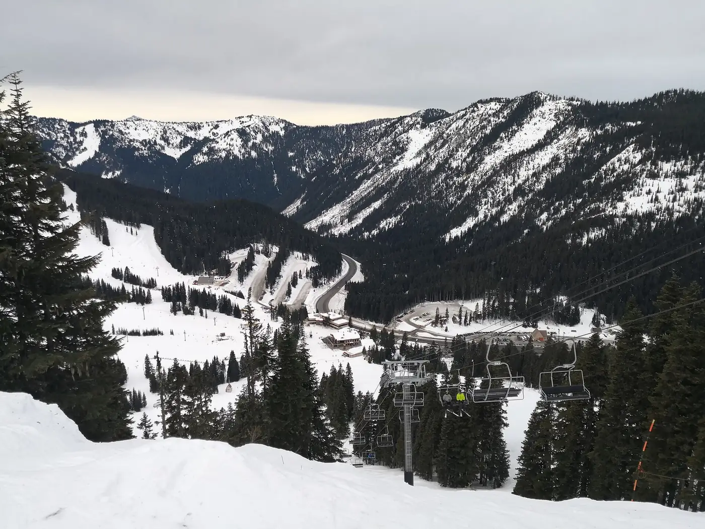

Stevens Pass, Washington · Ski conditions
Stevens Pass Conditions and Webcams Today
Stevens Pass' webcams and kid facts: aims to open Dec 4, lessons from age 3, no childcare. Seattle is 78 miles, 2 to 2.5 hours, Stevens Pass says.
Researched with AI (Miles Rowan) · sources linked and dated · How we check
Stevens Pass' own status
Not open yetOpens Fri, Dec 4, a target date that can move with weather (Stevens Pass' Oct 20 parking update, read Nov 17).
Our webcam read
No cam read from us yet. Cam reads show here only when a recent one has passed a separate automated accuracy check.

Cam by cam
The 5 Stevens Pass cam views our reader uses, in our own descriptive words (see Stevens Pass' own cam page, as listed in our cam feed Nov 17): Snow stake, Base plaza, Daisy lift, Lift top, Upper slopes. Once our reads start, each cam's last read time shows here.
Plan the day with kids
- Season and hours: Target opening Fri, Dec 4, 2026, weather permitting. The 2026/27 hours page still lists lift, night skiing and ski school times as TBD; no closing date posted.
- Childcare: None. Stevens Pass says it does not offer a daycare service and has no play space; kids 3 and up can take a lesson instead.
- Lessons: From age 3. Ages 3-6: smaller groups by ability. Ages 7-14: group lessons. Potty trained; helmet required. Lift tickets and rentals not included.
- Lesson morning: Meet at the Youth Programs Meeting Area (Daisy chairlift side of the ski school). Arrive 60 minutes early if renting, 30 if not. Lesson page times: full day 9:30am-3:30pm with lunch.
- Lift tickets: Stevens Pass' home page says lift tickets will be limited; buy ahead. We couldn't read the ticket page, so we show no prices.
- Sledding: No sledding or tubing at the ski area. Sledding is allowed at the Stevens Pass Nordic Center (no hours or prices on the pages we read).
- Parking: Non-peak days: free, first come. Peak weekends and holidays: reserve before 10am. Carpool reservations are free for 4 or more, or one adult with 2 kids 12 or under.
Parking prices on Stevens Pass' pages, read Nov 17:
- Paid parking reservation, peak days before 10am (per vehicle, plus taxes and fees): $20
2026/27 season. Non-peak days are free. Peak days include Dec 5-6, 12-13, 19-20 and Dec 26-Jan 3 (full list on Stevens Pass' page).
Lift tickets and lessons: Stevens Pass' pages we could read show a parking price but no lift ticket or lesson prices, so we can't sum a family-of-4 day; check live. See Stevens Pass lift tickets.
From Stevens Pass home page, Stevens Pass lessons: know before you go, Stevens Pass family ski trip guide (no date posted), Stevens Pass winter parking update (posted Oct 20, 2026), Stevens Pass ski and ride lessons: first timers, Stevens Pass getting here and parking and Stevens Pass hours of operation, read Nov 17.
Getting there from Seattle and Wenatchee
- Car: Seattle 78 miles (2 to 2.5 hours), Everett 65 miles (1.5 hours), Wenatchee 58 miles (1.25 hours), Leavenworth 35 miles (45 minutes), per Stevens Pass. Times vary with roads.
- Stevens Pass points to WSDOT (app, website and X) for Highway 2 road conditions before you drive.
- On peak days without a reservation, lots often stay full after 10am; Stevens Pass suggests arriving after 2pm. Text "start" to 360-300-1768 for parking updates.
If the snow is thin
- Lessons aren't canceled for weather while the resort runs, and there's no refund for weather, wind or snow levels. Cancel more than 48 hours ahead for a full refund; inside 48 hours a one-day lesson costs a 50% fee.
- Off the slopes: sledding at the Stevens Pass Nordic Center (no hours or prices posted for this winter).
- We didn't find a weather refund policy for lift tickets on the pages we read; check before you buy.
From Stevens Pass ski and ride lessons: first timers and Stevens Pass lessons: know before you go and Stevens Pass family ski trip guide (no date posted), read Nov 17.
How we read the cams: a program looks at Stevens Pass' public webcam pictures and notes only what a picture can show: fresh snow, snow cover, snowmaking, moving lifts, how busy the base looks, visibility and the snow stake. Each read shows its time; after 90 minutes it is marked older, after 6 hours it is hidden. We never say whether terrain is safe, icy, groomed or open; Stevens Pass' own report decides that. We don't show the cam pictures or count people.
Sources: Stevens Pass mountain cams · Stevens Pass hours of operation · Stevens Pass ski and ride lessons: first timers · Stevens Pass getting here and parking · Stevens Pass home page · Stevens Pass lessons: know before you go · Stevens Pass family ski trip guide (no date posted) · Stevens Pass winter parking update (posted Oct 20, 2026) (read Nov 17). We haven't skied Stevens Pass.